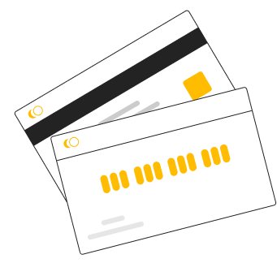

Перед тим, як Ви перевірите свою пошту, маю для Вас ще одну пропозицію.
Вона для тих, хто хоче бути здоровим, а не лікувати хвороби.
Якщо ви хочете прибрати головні болі, зменшити ризик серцево-судинних захворювань, покращити роботу внутрішніх органів, виведення шлаків, зміцнити м'язи і просто покращити своє самопочуття – вам чудово підійде
Оздоровча гімнастика «9 сил»
Що мені дали ці вправи ?
Віктор
Пражмовський
Три роки поспіль мав різні травми і хвороби. Після другої операції на пахову грижу, довго боявся давати собі якісь фізичні навантаження.
Як наслідок – накопичилася надлишкова вага, двічі на тиждень головний біль з самого ранку, загальна слабкість і просто погане самопочуття.
Через рік став почуватися руїною. Потрібно було щось міняти.
Почав з трьох вправ і поступово став виконувати комплекс повністю.
Це було саме те, що потрібно моєму організму зранку – після такої ранкової зарядки нарешті став почуватися бадьорим і здоровим.
Але найважливішим для мене ефектом стало те, що десь через півтора місяці після початку, помітив відсутність головного болю. Він просто зник.
Ці вправи виконують різні люди в Україні, Швеції, Польщі, Словаччині, Італії та Великій Британії. Та не про це мова – усі, хто регулярно виконує цю оздоровчу гімнатику, відзначають покращення загального самопочуття. А дехто – навіть стверджує, що покращився зір.
Що відбувається при регулярному виконанні комплексу «9 сил»?
Покращується
робота внутрішніх органів і виведення шлаків
Підвищується
тонус поперечних і косих м'язів живота, завдяки чому він поступово втягується
Покращується
рух лімфи в організмі, як наслідок – прибираються передумови целюліту у жінок.
Припиняються
головні болі
Покращується
робота передміхурової залози і органів малого тазу
Зміцнюються
м'язи спини, які підтримують хребет
Покращується
робота щитовидної залози
Що таке гімнастика «9 сил»?
Комплекс складається з дев'яти основних вправ, які за рахунок почергового напруження і розлаблення різних групп м'язів, пропрацьовують одну, або одночасно декілька функціональних систем організму людини.
Вправи не потребують особливої підготовки, тому можуть виконуватися після мінімального засвоєння техніки виконання. Більше того – кожну вправу можна робити окремо протягом дня. Але краще – разом.
Оздороча гімнастика «9 сил» була розроблена майстром бойового мистецтва «Спас» Олександром Притулою на основі авторських і народних методик. В ній поєднуються давні традиції з сучасними досягненнями.
Олександр один з двох українців, які отримали «Оскара» в галузі бойових мистецтв у США.

Відповіді на найчастіші запитання
Кому підійдуть вправи?
+
Для тих, хто має сидячу роботу
Тим, хто багато часу проводить на ногах
Тим, чия робота пов’язана з фізичними навантаженнями
Будуть корисними навіть для спортсменів
ЧОМУ САМЕ ЦЕЙ КОМПЛЕКС?
+
У мене теж боліла спина. Доходило до того, що не міг нормально спати. Довелося звертатися до лікарів.
Один з них, остеопат, сказав приблизно наступне: ти можеш і далі тратити гроші на процедури, а можеш самостійно робити вправи і забути про болі в спині.
Я обрав вправи. Чому? Бо він сам, маючи кілька міжхребцевих гриж, виконує їх щодня і почувається досить бадьоро.
Ці вправи не є ліками. Але регулярне виконання створює оздоровчий ефект, що усуває больові відчуття у попереку і дозволяє вільно дихати.
З їх допомогою можна зняти напруження у поперековому та підвздошно-крижовому відділах. Також, напруження і хребцево-реберні блоки для відновлення об’єму дихання, роботи діафрагм та дренажу внутрішніх органів після тривалих статичних і динамічних навантажень.
Який інвентар потрібен?
+
М’яч для великого тенісу або пластикова пляшка з водою
Килимок для йоги, каремат, або не дуже товста ковдра
Вільна рівна поверхня
ЩО ВИ ОТРИМУЄТЕ?
+
Ви платите за доступ до відео на ютуб.
За кілька хвилин після оплати на вказану вами електронну пошту прийде лист з вкладеним у нього файлом формату pdf, у якому буде активне посилання на закрите відео у ютубі. Слідуєте інструкціям у листі і переходите за посиланням.
Якщо ви не знайдете листа у скриньці – перевірте спам
Головним протипоказанням для виконання цих вправ є нещодавно перенесені хірургічні операції. В цьому випадку варто проконсультуватися з лікарем на предмет коли можна приступити до виконання вправ
КОРОТКО ПРО МЕНЕ
Мене звати Віктор Пражмовський, з 2004 року я тренер бойового мистецтва «Спас».
Маю три вищі освіти: офіцер управління тактичного рівня, політолог і спортивний тренер.
Один з фундаторів бойового мистецтва «Спас»
Маю перший дан контактного карате і четвертий дан школи Окамі-рю.